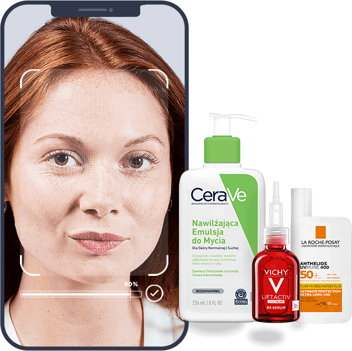
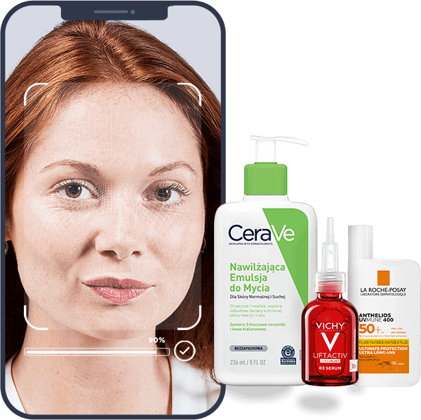

DOWIEDZ SIĘ WIĘCEJ
O SWOJEJ SKÓRZE
Zrób diagnozę skóry dzięki zwykłemu selfie i odkryj spersonalizowaną rutynę pielęgnacyjną od marek rekomendowanych przez dermatologów.
 

ROZPOCZNIJ TERAZ skanując kod qr. analiza skóry POTRWA TYLKO DWIE MINUTY.
ZESKANUJ
KOD QR
Dermo Scan działa
tylko na smartfonach


ZAAWANSOWANE
ROZWIĄZANIE
DERMATOLOGICZNE
Opracowane we współpracy z dermatologami. Zasilane przez sztuczną inteligencję.
Bardzo dokładna ocena skóry, porównywalna z oceną przeprowadzoną przez dermatologów i ekspertów ds. skóry.
*dla następujących problemów związanych ze starzeniem się skóry: pigmentacja, głębokie zmarszczki, blask, drobne linie, pory, jędrność.
Narzędzie to nie zastępuje konsultacji dermatologicznej i nie wykrywa chorób skóry. Pamiętaj, aby skonsultować się z dermatologiem w celu przeprowadzenia pełnej diagnostyki skóry.
POPARTE BADANIAMI NAUKOWYMI, ZASILANE SZTUCZNĄ INTELIGENCJĄ
POPARTE
BADANIAMI NAUKOWYMI,
ZASILANE
SZTUCZNĄ INTELIGENCJĄ
najczęściej zadawane pytania
W jaki sposób Dermo Scan analizuje stan skóry?
Dermo Scan porównuje Twoje zdjęcie z bazą ponad 16 000 innych zdjęć użytych do nauczenia narzędzia.
Czy mogę użyć narzędzia Dermo Scan, jeśli mam na twarzy makijaż?
W celu uzyskania najlepszych rezultatów rekomendujemy wykonać analizę skóry bez makijażu.
Czy korzystanie z narzędzia Dermo Scan wymaga utworzenia konta użytkownika, czy mogę przeprowadzić analizę skóry anonimowo?
Dermo Scan nie wymaga zakładania konta lub logowania się. Analiza skóry jest przeprowadzana anonimowo.
Czy usługa Dermo Scan jest bezpieczna i czy przekazywanie zdjęć skóry nie stanowi zagrożenia dla mojej prywatności?
Dermo Scan jest bezpiecznym narzędziem. Wszystkie informacje oraz przesłane zdjęcia niezbędne do odpowiedniej diagnozy skóry twarzy zostają usunięte z serwerów i nie są przechowywane.
Czy narzędzie Dermo Scan może rozpoznawać potencjalnie poważne problemy dermatologiczne np. nowotwory skóry?
Narzędzie to nie zastępuje konsultacji dermatologicznej i nie wykrywa chorób skóry. Pamiętaj, aby skonsultować się z dermatologiem w celu przeprowadzenia pełnej diagnostyki skóry.
Na jakich urządzeniach Dermo Scan działa najlepiej?
Rekomendujemy przeprowadzić diagnozę na urządzeniu mobilnym, w dobrym naturalnym oświetleniu.
Czy Dermo Scan ma jakieś ograniczenia dotyczące różnych typów skóry, koloru skóry lub wieku?
Dermo Scan działa dla każdego typu oraz koloru skóry. Narzędzie jest przeznaczone dla osób powyżej 18 roku życia.
Jakie dane są przechowywane przez narzędzie Dermo Scan oraz czy mogę je w każdym momencie usunąć?
Żadne dane osobowe nie są przechowywane ani powiązane z Tobą. Wszystkie podane informacje oraz wgrane/zrobione zdjęcia zostają usunięte z serwera.
Czy Dermo Scan ma opcję śledzenia i archiwizowania wcześniejszych wyników analizy, aby można było porównać postępy w pielęgnacji skóry?
Nie. Dermo Scan nie przechowuje danych osobowych. Jeśli jesteś zainteresowany takim rozwiązaniem, zalecamy wykonanie zrzutu ekranu wyników.
Czy analiza skóry przy użyciu narzędzia Dermo Scan jest darmowa?
Tak. Wszyscy klienci mogą wykonać analizę stanu skóry bez żadnych opłat.